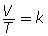
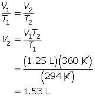
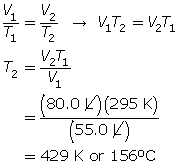
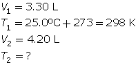
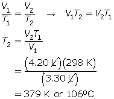

Module 3—Behaviour of Gases
Explore
You may have observed a container rupture as a result of the expansion of the trapped gas inside. This event may occur if the gas is heated, for instance by the sun on a hot day or by exposure to another heat source.
 Read
Read
The kinetic molecular theory states that particles increase their rate of motion with increased temperature. How does this theory relate to the pressure and volume of a confined gas?
Read “The Relationship Between Temperature and Volume” and "Absolute Temperature Scale" on pages 152 to 153 and “Temperature Measurement Technologies” on pages 155 and 156 in your textbook. You will learn more about the absolute temperature scale and how it is related to the motion of particles. You will also find out why precise measurement is necessary for scientific investigation of gases.
 Self-Check
Self-Check
SC 1. Complete the following table.
Temperature (°C) |
Temperature (K) |
–38 |
|
|
358 |
104 |
|
|
413 |
173 |
|
Self-Check Answers
SC 1.
Temperature (°C) |
Temperature (K) |
–38 |
235 |
85 |
358 |
104 |
377 |
140 |
413 |
173 |
446 |
Read
In the Try This activity you completed earlier, you noticed that when the balloon cooled, it was reduced in size, or the volume the gas inside occupied, was less.
What would happen if you cooled or heated the gas inside the balloon and continued to measure its volume? Would you be able to observe a pattern?
Read “Charles’ Law” on pages 154 and 155 in your textbook. Carefully work through “COMMUNICATION example 3” and the “Learning Tip” in the margin on page 155.
Important: Remember that temperatures used in calculations must be in Kelvin, not degrees Celsius.
Self-Check
SC 2. A balloon containing 1.25 L of helium is heated and increases in temperature from 21°C to 87°C. If kept at constant pressure, what is the final volume of the helium in the balloon?
SC 3. A balloon has a volume of 55.0 L at 22.0°C. To what temperature does the balloon need to be raised to have a volume of 80.0 L at the same pressure?
SC 4. A gas has a volume of 3.30 L and a temperature of 25.0°C. The temperature of the gas is increased, and the new volume is 4.20 L. If the pressure is held constant, what is the new temperature of the gas?
SC 5. A gas is in a perfectly airtight metal cylinder with a movable top to allow for the expansion/compression of the gas. Charles’ law states that the ratio of volume to temperature for a gas is a constant, according to this formula:

Design an experiment to determine the value of k for the gas.
Self-Check Answers
SC 2. First, convert the temperatures to K.
21°C + 273 = 294 K
87°C + 273 = 360 K
Now, use Charles’ law.

SC 3. First, convert the temperature to K.
22°C + 273 = 295 K
Now, use Charles’ law.

SC 4. First, list all the variables.


SC 5. A possible experiment is given.
Heat up the gas from 200 K to 300 K. Using increments of 10 K for each trial, measure the resulting volume of the gas. Plot the measurements on a graph with volume on the y-axis and temperature on the x-axis. Calculate the slope of the straight-line graph. This yields the value for k. (Recall that the equation V = kT is a straight line of the form y = mx.)
 Try This
Try This
For additional practice, try the following questions in your textbook:
- questions 11, 12, and 13 on page 154
- questions 14(a), 15, 16, and 17 on page 156
You can find the answers to these questions on page 783 in Appendix A of your textbook.